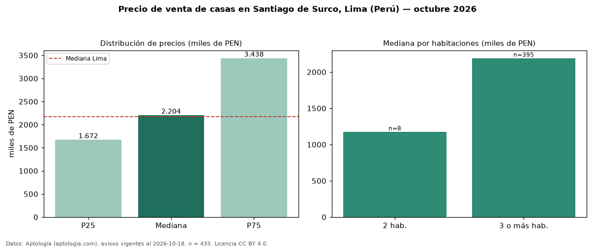

Precio de venta de casas en Santiago de Surco, Lima (Perú) — octubre 2026
Con 433 avisos vigentes, el precio mediano de casas en venta en Santiago de Surco, Lima (Perú) es PEN 2,20 millones. Prácticamente coincide con la mediana de Lima para casas (PEN 2,17 millones). Por metro cuadrado, la mediana es PEN 6.719/m² (n = 406 avisos con área), 13 % por encima de Lima (PEN 5.926/m²). Con el precio por m² de alquiler del mismo segmento (PEN 24,67/m² al mes), la rentabilidad bruta implícita es 4,4 % anual (aproximación con medianas de ofertas distintas). El área mediana anunciada es 315 m². El segmento con más oferta es el de 3 o más habitaciones (395 avisos, mediana PEN 2,19 millones); pasar de 2 habitaciones a 3 o más habitaciones cambia la mediana +86 %. La mitad central de los avisos va de PEN 1,67 millones a PEN 3,44 millones (razón 2,1), una dispersión alta. Por precio mediano es el puesto 5 de 14 distritos de Lima con al menos 30 avisos de casas en venta (PEN): en la franja media. Datos: Aptología (aptologia.com), CC BY 4.0 — https://www.aptologia.com/pe/venta/lima/santiago-de-surco. Archivos: PDF, CSV con las cifras y gráfica PNG.

| Avisos únicos | 433 |
|---|---|
| Percentil 25 | COP 1.672.000 |
| Mediana | COP 2.204.000 |
| Percentil 75 | COP 3.437.618 |
| Mediana por m² | COP 6.718 |
Fuente: avisos vigentes de portales inmobiliarios recopilados por Aptología, deduplicados (mínimo 30 avisos únicos por celda). Precios pedidos, no cerrados. Fecha: 2026-10-18.